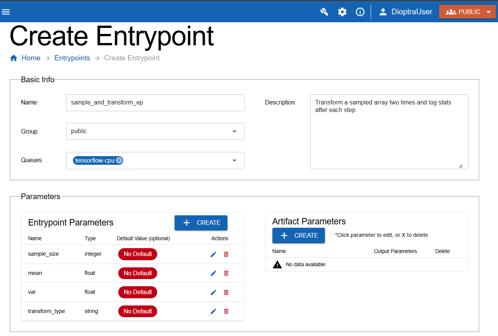
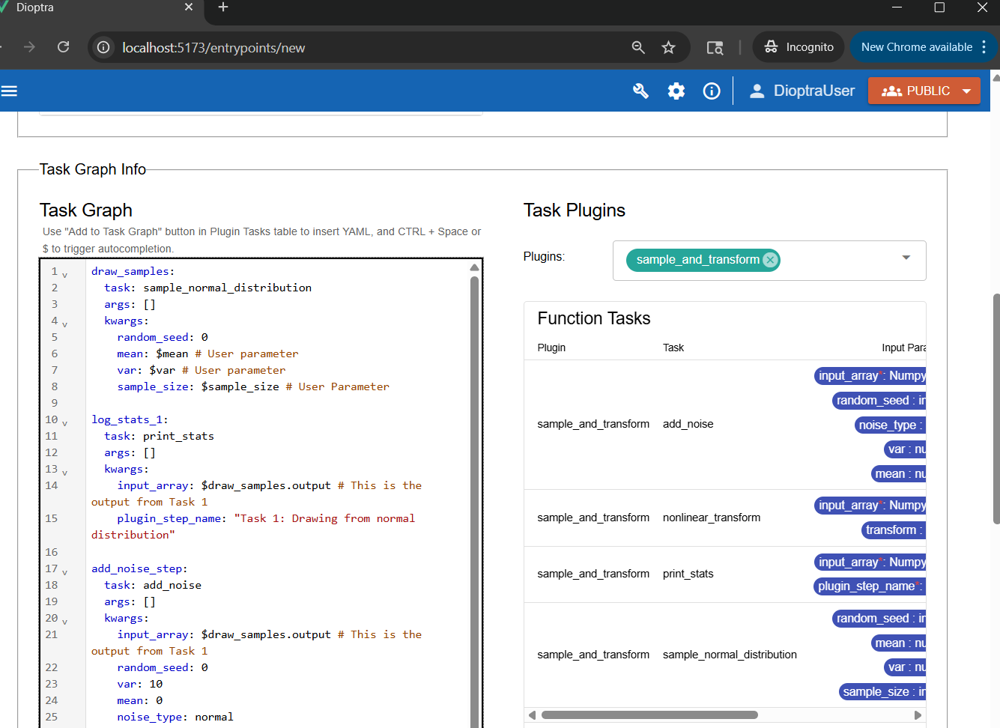
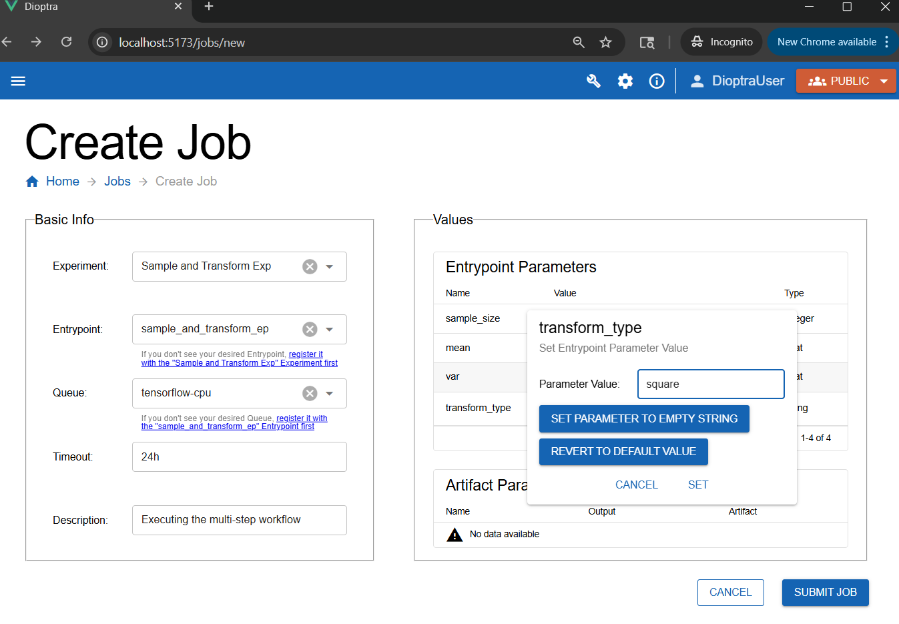

Building a Multi-Step Workflow#
Overview#
So far, you have built plugins with a single task and connected them to an entrypoint. Now, you will extend the idea further by creating a Plugin with multiple registered Tasks and chaining those tasks together in an Entrypoint.
This will let you:
Register multiple Python functions as tasks in one plugin
Reference outputs of earlier tasks as inputs for later tasks
Repeat tasks with different inputs
See how multiple steps can be chained together to make a data generation workflow
You will run the workflow once and inspect how the data evolves across multiple steps.
Workflow#
Step 1: Make “sample_and_transform” Plugin#
The sample_and_transform plugin will include multiple functions, each registered as a plugin task.
Other than containing more functions, you will create the plugin the same way as before.
The tasks include:
sample_normal_distribution: sample a NumPy array
add_noise: perturb the array with additive noise sampled from a normal distribution
nonlinear_transform: apply a configurable transformation (e.g. square each value)
print_stats: log mean, variance, min, max of the current state of the array
Plugin Creation Steps
Go to the Plugins tab and click the Create button in the Plugins table.
Name it
sample_and_transformand add a short description.Open the Plugin you just created and then click Create to add a new file. Name the file
sample_and_transform.py, add a description, then paste the Python code code below into the code editor.Import functions via Import Function Tasks (same as in Step 3: Register the Task). Fix any Parameter Type errors as needed.
sample_and_transform.py
import numpy as np
import structlog
from dioptra import pyplugs
LOGGER = structlog.get_logger()
def sqrt(num:float)->float:
return np.sqrt(num)
@pyplugs.register
def sample_normal_distribution(
random_seed: int = 0,
mean: float = 0,
var: float = 1,
sample_size: int = 100)-> np.ndarray:
if var<=0:
LOGGER.warning(f"Variance {var} must be greater than 0 - defaulting to variance=1")
var=1
rng = np.random.default_rng(seed=random_seed)
std_dev = sqrt(var)
draws = rng.normal(loc=mean, scale=std_dev, size=sample_size)
return draws
@pyplugs.register
def add_noise(input_array: np.ndarray,
random_seed: int = 0,
noise_type: str = 'normal', # Options: normal, uniform
var:float = 1,
mean:float = 0,
)-> np.ndarray:
rng = np.random.default_rng(random_seed)
if var<=0:
LOGGER.warning(f"Variance {var} must be greater than 0 - defaulting to variance=1")
var=1
if noise_type == "normal":
std_dev = sqrt(var)
noise = rng.normal(loc=mean, scale=std_dev, size=len(input_array))
elif noise_type == "uniform":
a = np.sqrt(3 * var)
noise = rng.uniform(low=-a, high=a, size=len(input_array))
else:
raise ValueError(f"Unsupported noise_type: {noise_type}")
return input_array + noise
@pyplugs.register
def nonlinear_transform(input_array: np.ndarray,
transform: str = "square") -> np.ndarray:
if transform == "square":
return input_array ** 2
elif transform == "log":
return np.log1p(input_array - np.min(input_array) + 1)
elif transform == "tanh":
return np.tanh(input_array)
else:
raise ValueError(f"Unsupported transform: {transform}")
@pyplugs.register
def print_stats(input_array: np.ndarray, plugin_step_name: str) -> None:
arr_mean = float(np.mean(input_array))
arr_std = float(np.std(input_array))
arr_min = float(np.min(input_array))
arr_max = float(np.max(input_array))
arr_len = int(len(input_array))
LOGGER.info(
f"Plugin Task: '{plugin_step_name}' - "
f"The mean value of the array after this step was {arr_mean:.4f}, "
f"with std={arr_std:.4f}, min={arr_min:.4f}, max={arr_max:.4f}, len={arr_len}."
)
Click Submit File to save the Plugin file.
Step 2: Create “sample_and_transform” Entrypoint#
The sample_and_transform_ep entrypoint will demonstrate a multi-step task graph. You will be able to pass arrays from one task to the next and re-use the print_stats task multiple times.
Entrypoint Creations Steps
Create a new entrypoint named
sample_and_transform_ep. Add a description and attach thetensorflow-cpuQueue.Under the Entrypoint Parameters window, add the four parameters listed below, ensuring you select the correct types (
integer,float,float,string).
Parameters for this entrypoint:
sample_size(integer)mean(float)var(float)transform_type(string)
Note: Turn off the default value option for all of these Entrypoint Parameters.

Defining entrypoint parameters to use in the task graph.#
Step 3: Build the Task Graph#
You are going to build a task graph with six steps:
draw_normal(generates draws)print_stats(logs stats from the output of step 1)add_noise(adds noise to draws from step 1)print_stats(logs stats from the output of step 3 - the array with added noise)transform(applies chosen transform to the output from step 3)print_stats(logs stats from the output of step 5 - the transformed array)
Key ideas:
Reference outputs of earlier tasks (e.g., use
outputfrom step 1 as input to step 2).Re-use the same task (
print_stats) multiple times with different inputs.
Steps
Go to Task Graph Info.
Select
sample_and_transformin the plugins list.Paste the following YAML code into the editor:
Sample and Transform: Task Graph YAML
draw_samples:
task: sample_normal_distribution
args: []
kwargs:
random_seed: 0
mean: $mean # User parameter
var: $var # User parameter
sample_size: $sample_size # User Parameter
log_stats_1:
task: print_stats
args: []
kwargs:
input_array: $draw_samples.output # This is the output from Task 1
plugin_step_name: "Task 1: Drawing from normal distribution"
add_noise_step:
task: add_noise
args: []
kwargs:
input_array: $draw_samples.output # This is the output from Task 1
random_seed: 0
var: 10
mean: 0
noise_type: normal
log_stats_2:
task: print_stats # Invoking this plugin task again with different input_array
args: []
kwargs:
input_array: $add_noise_step.output # This is the output from Task 3
plugin_step_name: "Task 2: Adding Noise"
transform_step:
task: nonlinear_transform
args: []
kwargs:
input_array: $add_noise_step.output
transform: $transform_type # User Parameter
log_stats_3:
task: print_stats # Invoking this plugin task a third time
args: []
kwargs:
input_array: $transform_step.output # This is the output from Task 5
plugin_step_name: "Task 3: Transforming the array"
Note
The output of all the tasks is simply called output. This can be changed during plugin task registration if desired.

Multi-step task graph that repeats Plugin Task “print_stats” three times, each utilizing a different output array.#
Note
Notice how the $ syntax is used to reference both entrypoint parameters AND the output of plugin tasks.
Click Validate Inputs - it should pass
Click Submit Entrypoint.
Step 4: Create Experiment#
Because this workflow is conceptually different, make a new experiment for organizational purposes.
Steps
Navigate to Experiments and click Create.
Name the new Experiment
Sample and Transform Exp. Add a description.Add the
sample_and_transform_epentrypoint to the experiment.Click Submit Experiment.
Step 5: Run a Job#
It’s time to execute the multi-step workflow.
Go to the Jobs tab and click Create.
Select Sample and Transform Exp for the Experiment and sample_and_transform_ep for the Entrypoint.
Choose parameter values, for example:
sample_size= 1000mean= -5var= 10transform_type= “square”
Add a Description, then click Submit Job.

Creating a new job - any parameter that does not have a default value needs to have one provided at Job runtime.#
Step 6: Inspect Results#
After the job finishes, check the logs to see the statistics evolve.
Job Log Outputs
Plugin Task: 'Task 1: Drawing from normal distribution' - The mean value of the array after this step was -5.1519, with std=3.0888, min=-17.3311, max=4.6957, len=1000.
Plugin Task: 'Task 2: Adding Noise' - The mean value of the array after this step was -5.3038, with std=6.1775, min=-29.6621, max=14.3913, len=1000.
Plugin Task: 'Task 3: Transforming the array' - The mean value of the array after this step was 66.2917, with std=89.4162, min=0.0002, max=879.8407, len=1000.
Analysis:
After
add_noise: min/max shift noticeably, variance increases, mean remains stable.After
transform (square): all values change, mean and variance increase dramatically, min shifts upward.
This illustrates how different modifications (noise, transforms) propagate through a data pipeline.
Conclusion#
You now know how to:
Register multiple tasks in a single plugin
Build a multi-step entrypoint task graph
Reference outputs and repeat tasks
Run experiments with complex workflows
Next, you will learn how to save the output of a task as an artifact.